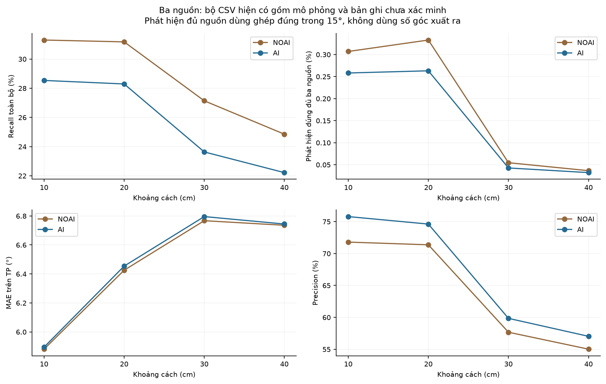
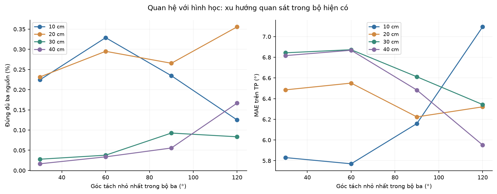
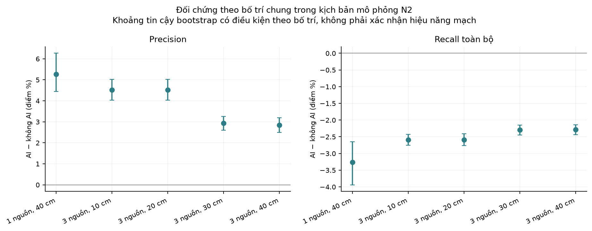
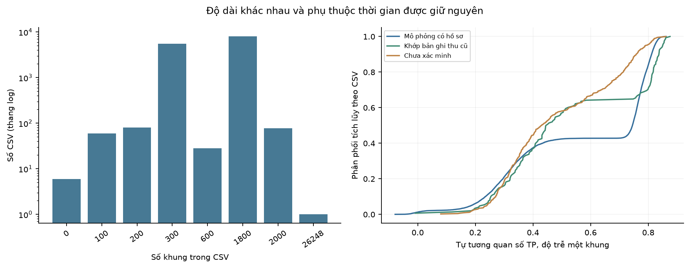

Kiểm định chất lượng dữ liệu DOA
13.782 CSV · 16.216.648 dòng · 59 file sửa thứ tự cột · 0 ô giá trị thay đổi
Đã cập nhật trực tiếp các file được xác minh cần sửa. Toàn bộ bản gốc được sao lưu và kiểm tra SHA-256. Không thêm nhiễu, không thêm mẫu, không loại điểm khác phân phối.
Kết quả và phạm vi sửa
Precision, recall, F1, MAE trên TP, tỷ lệ đủ nguồn và mọi khoảng tin cậy trước–sau đều giữ nguyên. Bộ đọc hiện tại đọc được 59 file sau chuẩn hóa. Nhật ký ghi rõ header cũ/mới, checksum và số dòng được sắp lại cột.
Bằng chứng nguồn dữ liệu
“Khớp bản ghi thu cũ” là bằng chứng về lịch sử nội dung, không xác thực độc lập phần cứng. File chưa xác minh không bị gọi là đo thật hoặc mô phỏng chỉ dựa trên phân phối.
Các phát hiện cần lưu ý
Tỷ lệ phát hiện đủ ba nguồn trong bộ hiện có rất thấp dù precision có thể cao. Một vài góc đúng trên mỗi khung không đồng nghĩa phát hiện đồng thời mọi nguồn. Các bảng tính đủ nguồn bằng ghép một-một trong 15° và tách riêng số khung xuất đủ số lượng góc.
Dữ liệu mô phỏng N2 dùng cùng đầu vào cho AI và không AI, rồi lọc hướng bằng ngưỡng giả định 0,25/0,35/0,15. AI không sửa góc. Nền nhiễu quạt/bàn phím và điểm phân loại là giả định, không phải nhãn âm hoặc SNR đã đo. Vì vậy chênh lệch chỉ số trong kịch bản này không chứng minh lợi thế trên mạch.
Có 8.604 khung chứa hướng góc giống hệt nhau. Giữ nguyên chúng vì chưa xác minh được nguyên nhân. Phân tích nhạy cảm thử chỉ tính hướng phân biệt làm giảm 7.176 TP và 1.428 FP; đây là phép đánh giá phụ, không được ghi vào CSV. Với nguồn sát nhau, hai hướng trùng có thể được ghép đúng hai mục tiêu trong dung sai 15° mà chưa chứng minh khả năng phân giải hai nguồn.
Tìm thấy 32.246 nhóm cửa sổ 20 khung trùng có đủ biến thiên; 32.243 nhóm nằm đúng trong cặp AI/đối chứng mô phỏng dùng chung đầu vào. Ba nhóm khác cần ngữ cảnh nguồn. Trùng chuỗi góc không chứng minh trùng âm thanh hoặc gian lận.
Góc nguyên và chuỗi lặp có thể xuất phát từ lượng tử hóa 1°, giữ vết hướng, cửa sổ AI, ngưỡng trễ, tín hiệu ổn định hoặc bộ tạo mô phỏng. CSV hướng không đủ phân biệt riêng từng nguyên nhân đối với nhóm chưa xác minh. Không thêm nhiễu để phá các mẫu lặp.
Khoảng cách, góc tách, phản xạ, trường gần và ngưỡng phát hiện đều có thể ảnh hưởng chỉ số. Tuy nhiên không có âm thanh gốc, SNR, trạng thái hoạt động từng nguồn hoặc nhật ký phiên thu để xác định nguyên nhân vật lý. Xu hướng trong phần mô phỏng còn chịu các tham số đã đặt trước.
MAE trên TP chỉ dùng những góc được ghép đúng trong 15°. mean_error trong CSV chỉ có ở khung xuất đúng số lượng hướng và dùng tất cả sai số của phép ghép tổng sai số nhỏ nhất, không cắt ở 15°. MAE giảm ở cự ly xa có thể do chỉ còn các góc dễ được phát hiện, không nhất thiết góc đo tốt hơn.
File có 26.248 khung và các nhóm 100/200/300/600/1.800/2.000 khung gây khác biệt trọng số khi gộp. Báo cáo giữ nguyên độ dài và cung cấp cả chỉ số gộp theo khung, trung bình theo CSV và trung bình theo bố trí. Không coi các khung chồng lấp là các phép thử độc lập.
Các điểm thiếu vẫn giữ nguyên: hai nguồn không AI ở 10 cm chưa có dữ liệu; hai nguồn AI ở 40 cm chỉ có một bố trí. Sáu file chỉ có tiêu đề không tham gia tính hiệu năng. Bộ hiện tại chưa thể thay thế thí nghiệm đối chứng phần cứng có nhãn âm, trạng thái nguồn và nhật ký thu.
Hồ sơ xử lý trước ghi nhận 40 file bị loại khi recall bỏ trống, precision hoặc F1 bỏ trống dưới 55%. Bản ZIP chứa đủ 40 file đã được đối chiếu checksum với nhật ký. Đây là bằng chứng chọn mẫu theo kết quả: các file giữ lại không còn là tập ngẫu nhiên đại diện cho mọi lần thu. Không khôi phục chồng các phiên bản cũ vào dữ liệu hiện tại và không loại thêm file; phân tích ảnh hưởng chọn mẫu được xuất riêng trong historical_selection_bias.json.
Chỉ số theo cự ly và số nguồn
P/R/F1 gộp từ tổng TP/FP/FN. R toàn bộ gồm khung không có hướng; R bỏ trống có điều kiện trên khung xuất ít nhất một hướng. MAE trên TP trong 15°. “Đủ nguồn” khác “đủ số lượng góc”.



Chuỗi lặp, độ dài và các dòng nghi vấn
Số dòng theo từng loại có thể chồng lấp; không cộng chúng để suy ra số dòng độc lập. Không xóa hoặc sửa các dòng được đánh dấu thống kê.

Tra cứu từng file
Phương pháp và mức tin cậy
Thống kê mô tả theo từng cột/tệp, từng bố trí, cự ly và nhóm nguồn gồm trung bình, trung vị, phương sai mẫu, độ lệch chuẩn và phân vị. Góc có thêm trung bình vòng tròn, độ tập trung và phương sai vòng tròn; không diễn giải trung bình tuyến tính của góc qua mốc 0°.
KS dùng thống kê D và hoán vị nhãn CSV trong cùng cấu hình để xử lý giá trị rời rạc và trùng hạng; không dùng p-value KS liên tục cho các góc nguyên. Mann–Whitney dùng hoán vị cho nhóm nhỏ. Wilcoxon dùng các bố trí chung, với giả thiết phân phối chênh lệch đối xứng. Kuiper dạng phân phối tích lũy vòng tròn dùng hoán vị toàn CSV, không hoán vị từng khung.
Kruskal–Wallis theo khoảng cách được giữ ở mức mô tả vì các bố trí lặp lại giữa cự ly. p và q danh nghĩa được xuất riêng; hiệu chỉnh đa kiểm định không khắc phục vi phạm độc lập. Phân tích cự ly có ghép cặp dùng Friedman và Wilcoxon. Các kiểm định không chứng minh quan hệ nhân quả.
Bước nhảy của mọi góc raw, kể cả hướng sai hoặc chưa ghép mục tiêu, được ghép giữa hai khung liên tiếp theo tổng độ dịch chuyển vòng nhỏ nhất. Cách ghép không xác minh danh tính nguồn. ACF góc raw dùng phần thực/ảo vector đơn vị trung bình; khung trống không được nối tắt. Thống kê bước và ACF trên các hướng TP được ghi riêng, không dùng thay thế cho mọi góc raw.
Kiểm định runs dùng phân phối chính xác có điều kiện theo số khung 0/1, so với giả thuyết vị trí độc lập. Bác bỏ giả thuyết này là bằng chứng phụ thuộc thời gian, không phải bằng chứng dữ liệu giả. Tất cả p-value suy luận hợp lệ được điều chỉnh Benjamini–Yekutieli toàn cục. KW danh nghĩa được điều chỉnh trong một họ riêng và không dùng kết luận suy luận.
Bootstrap theo tệp dùng 499 lần lấy lại khối khung liên tiếp, giữ đúng số khung mỗi lần. Độ dài khối chọn theo ACF đến độ trễ 30 khung và căn bậc ba số khung. Nếu phụ thuộc còn kéo dài hơn hoặc chuỗi không dừng, khoảng tin cậy có thể chưa đủ rộng. Khoảng tin cậy theo cự ly dùng 2.000 lần lấy lại bố trí; theo từng cấu hình dùng toàn CSV lặp lại. Các khoảng này có điều kiện theo tính dừng cục bộ và đơn vị lặp đã chọn. Khi không có mã phiên thu, không thể bảo đảm độc lập thực nghiệm. Khoảng bootstrap bằng 0 khi mọi lần quan sát đều 0 không chứng minh xác suất thật bằng 0.
Giữ nguyên mọi số đo và mọi dòng. RNG chỉ chọn chỉ số bootstrap/hoán vị với seed 20261015, không tạo hoặc chỉnh hướng góc. p > 0,05 không xác nhận dữ liệu là dữ liệu thật.
Tài liệu phương pháp: KS, Mann–Whitney, Wilcoxon, FDR Benjamini–Yekutieli. Công thức, mã kiểm định và phiên bản thư viện nằm trong thư mục tái lập.
p-value lớn không chứng minh dữ liệu thật. Chỉnh sửa định dạng không làm bộ mô phỏng trở thành kết quả thực nghiệm. Những nguyên nhân vật lý chưa có dữ liệu xác minh được ghi là giả thuyết.